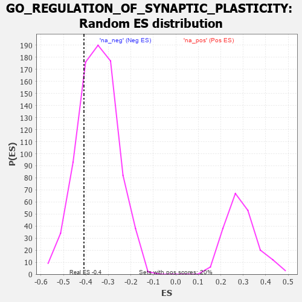

| | | Dataset | 7d |
| Phenotype | NoPhenotypeAvailable |
| Upregulated in class | na_neg |
| GeneSet | GO_REGULATION_OF_SYNAPTIC_PLASTICITY |
| Enrichment Score (ES) | -0.4088517 |
| Normalized Enrichment Score (NES) | -1.1772573 |
| Nominal p-value | 0.22347066 |
| FDR q-value | 0.66187274 |
| FWER p-Value | 1.0 |
Table: GSEA Results Summary
 Fig 1: Enrichment plot: GO_REGULATION_OF_SYNAPTIC_PLASTICITY
Fig 1: Enrichment plot: GO_REGULATION_OF_SYNAPTIC_PLASTICITY
Profile of the Running ES Score & Positions of GeneSet Members on the Rank Ordered List
| PROBE | GENE SYMBOL | GENE_TITLE | RANK IN GENE LIST | RANK METRIC SCORE | RUNNING ES | CORE ENRICHMENT | | 1 | ADCY8 | | | 124 | 1.418 | 0.0525 | No |
| 2 | CDC20 | | | 480 | 0.644 | 0.0387 | No |
| 3 | SRF | | | 542 | 0.615 | 0.0606 | No |
| 4 | MEF2C | | | 1054 | 0.473 | 0.0189 | No |
| 5 | CNTN4 | | | 1571 | 0.379 | -0.0279 | No |
| 6 | FMR1 | | | 1816 | 0.334 | -0.0426 | No |
| 7 | CREB1 | | | 2243 | 0.269 | -0.0834 | No |
| 8 | NR2E1 | | | 2844 | 0.177 | -0.1505 | No |
| 9 | RAB8A | | | 3319 | 0.102 | -0.2054 | No |
| 10 | CDK5 | | | 3480 | 0.080 | -0.2217 | No |
| 11 | NF1 | | | 3713 | 0.040 | -0.2490 | No |
| 12 | ABL1 | | | 4125 | -0.027 | -0.2995 | No |
| 13 | SYT12 | | | 4172 | -0.037 | -0.3035 | No |
| 14 | JPH3 | | | 4481 | -0.091 | -0.3380 | No |
| 15 | NPTN | | | 4519 | -0.098 | -0.3379 | No |
| 16 | NTRK2 | | | 4543 | -0.104 | -0.3358 | No |
| 17 | SYT4 | | | 4590 | -0.116 | -0.3360 | No |
| 18 | DRD2 | | | 5088 | -0.221 | -0.3880 | No |
| 19 | SSH1 | | | 5254 | -0.258 | -0.3965 | Yes |
| 20 | PTEN | | | 5262 | -0.261 | -0.3848 | Yes |
| 21 | PICK1 | | | 5265 | -0.263 | -0.3724 | Yes |
| 22 | RIMS2 | | | 5272 | -0.265 | -0.3604 | Yes |
| 23 | EPHA4 | | | 5273 | -0.265 | -0.3477 | Yes |
| 24 | ITPR3 | | | 5361 | -0.288 | -0.3448 | Yes |
| 25 | MPP2 | | | 5367 | -0.288 | -0.3316 | Yes |
| 26 | GRIN1 | | | 5381 | -0.291 | -0.3192 | Yes |
| 27 | DLG4 | | | 5388 | -0.293 | -0.3059 | Yes |
| 28 | DGKI | | | 5725 | -0.384 | -0.3298 | Yes |
| 29 | GRID2 | | | 6170 | -0.528 | -0.3603 | Yes |
| 30 | VAMP2 | | | 6525 | -0.672 | -0.3726 | Yes |
| 31 | CLN3 | | | 6580 | -0.699 | -0.3458 | Yes |
| 32 | ARF1 | | | 6583 | -0.701 | -0.3124 | Yes |
| 33 | RAB5A | | | 6655 | -0.741 | -0.2857 | Yes |
| 34 | GSK3B | | | 6719 | -0.768 | -0.2567 | Yes |
| 35 | GIPC1 | | | 6819 | -0.826 | -0.2294 | Yes |
| 36 | GRM5 | | | 7053 | -0.969 | -0.2122 | Yes |
| 37 | KCNB1 | | | 7444 | -1.327 | -0.1976 | Yes |
| 38 | GRIK2 | | | 7552 | -1.471 | -0.1403 | Yes |
| 39 | ADCY1 | | | 7695 | -1.752 | -0.0740 | Yes |
| 40 | GRIA1 | | | 7836 | -2.260 | 0.0170 | Yes |
Table: GSEA details [plain text format]

Fig 2: GO_REGULATION_OF_SYNAPTIC_PLASTICITY: Random ES distribution
Gene set null distribution of ES for GO_REGULATION_OF_SYNAPTIC_PLASTICITY